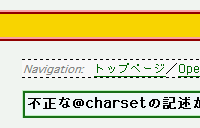
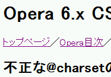

本来、@charset宣言が正しくない記述の場合はその部分のみを無視することになっている。しかしOperaでは不正な記述のあるスタイルシート全体が無視されてしまう。
この文書に適用しているスタイルシート内の@charset宣言：
@charset Shift_JIS;
この記述は、文字コードを示す文字列がクォーテーションマークで括られていないため、文法違反です。ただし、この場合は宣言末尾のセミコロンまでが無視されるので、以降のスタイル指定の記述は反映されるはずです。
Moz1.0での表示
Opera6.05での表示
Opera6.05/7.0では不具合の発生を確認しました。